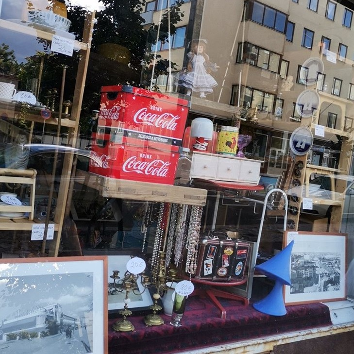
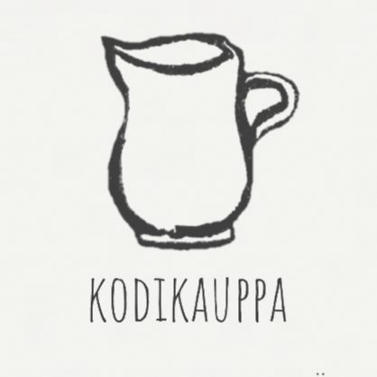

ANSIOLUETTELO
NOORA PATAMA
30.05.2021
Koulutus
Liiketalouden perustutkinto, merkonomi
Mercuria Kauppiaitten Kauppaoppilaitos | 2012 -2016
Talous- ja toimistopalveluiden osaamisala, työvaltainen linja
Näytöt asiakaspalvelusta, myynnistä, talouspalveluista, sähköisestä
kaupankäynnistä sekä visuaalisesta myyntityöstä.
Viestintä- ja vuorovaikutuspaja
Vantaan kaupunki | 2010
Opin valokuvaamaan järjestelmäkameralla ja muokkaamaan valokuvia
Photoshopilla.
Osallistuin tapahtumien järjestämiseen, harjoittelin viestintää ja vuorovaikutusta improvisaation sekä teatterin
avulla.
Työkokemus
Suunnittelin ja toteutin verkkosivut sekä ylläpidin asiakasyritykseni sivuja sekä päivitin somekanavia.
Valokuvasin ja kirjoitin sisältöä somessa julkaistavaksi.
Suunnittelin ja toteutin yrityksen logon ja muita markkinointimateriaaleja.
Osallistuin yrityksen kasvun suunnitteluun, toimin teknisenä tukena ja yleisnaisena.
9/2020 - 30.5.2021
Academic Work Consulting Oy / Veli Nopea Oy
11/2020 - 12/2020
Konsultti / rengasasentaja
Asensin renkaita henkilöautoihin ja keräsin vaihtopakkoja varastoista.
Päivitin varastopaikkojen muutoksia varastojärjestelmään.
Vantaan Seurakunnat
8/2020 - 9/2020
Leikkasin ruohoa päältäajettavalla ruohonleikkurilla, hoidin hautojen kukkaistutuksia ja kasteluita.
Hyötykasviyhdistys
10/2019 - 6 /2020
Keräsin tilauksia verkkokaupassa, tarkistin maksuja, tarkistin ja purin kuormia.
Palvelin asiakkaita tapahtumissa ja suunnittelin esillepanoja.
Hoidin yhdistyksen näytepuutarhoja ja valmistin myyntituotteita.
Osallistuin inventointiin yhdistyksen puodissa sekä kehitin varastointijärjestelmää.
Vapaaehtoistyö
Kodi Tmi
1/2019 - 9/2020
Osallistuin liiketoiminnan kasvun suunnitteluun ja toteutukseen.
Osallistuin myymälän ulkoasun suunnitteluun ja toteutukseen.
Järjestin myymälää ja varastotiloja.
Kuvasin tuotteita ja tein myynti-ilmoituksia.
Somistin liikkeen näyteikkunoita ja muokkasin yrityksen kotisivuja.
Batz Oy
4/2013 - 4/2016
Huolehdin päivittäisistä toimista: tilausten käsittely, maksut, kerääminen,
pakkaaminen, lähetys.
Hallinnoin varastoa, tilasin ja hinnoittelin myytäviä tuotteita.
Vastasin asiakaspalvelusta meilitse ja puhelimitse sekä hoidin suhteita tavarantoimittajiin.
Ylläpidin yrityksen somekanavia, suunnittelin ja toteutuin kampanjoita.
Organisoin ystävämyyntitapahtumia ja kehitin yrityksen toimintaa.
Tibicen Oy
1/2012 - 12/2012
Myin Veikkauspelejä ja muita kioskituotteita, käsittelin rahaa ja tein tilityksiä, hyllytin, valmistin grilli- ja paistotuotteita, tein ikärajavalvontaa sekä huolehdin elokuvavuokraustoiminnasta.
Kielitaito
| suomi | äidinkieli |
| englanti
| erinomainen |
| ruotsi |
perusteet |
| saksa |
alkeet |
Kurssit
| Mimmit Koodaa Bootcamp | 2020 |
| Työturvallisuuskortti | Työturvallisuuskeskus, kortti voimassa 4/2022 |
| EA1 | Punainen Risti |
| Kuluttajan Oikeudet ja Velvollisuudet | Kuluttajaliitto 2015 |
| Veikkauksen Peruskoulutus | Veikkaus 2012 |
It taidot
| MS Office |
sujuva |
| OpenOffice |
sujuva |
| PhotoShop |
perusteet |
| GIMP |
alkeet |
| Html |
alkeet |
| CSS |
alkeet |
| GoogleDocs |
sujuva |
| Magento |
sujuva |
| WordPress |
sujuva |
| Reki |
perusteet |
Harrastukset ja kiinnostuksen kohteet
Liikun vapaa-ajallani paljon, minut voi tavata
lenkkipoluilta päivittäin.
Harrastan kuvataiteita sekä ideoin ystäväni
peliprojektia.
Linkki portfoliooni:
Portfolio
Olen intohimoinen kirjoittaja ja kirjoitankin mitä tahansa mainosteksteistä runoihin.
Loin tämän ansioluettelosivun itse koodaamalla.
Parhaillaan työstän valokuvaportfoliota.
Linkki tulevaan valokuvaportfolioon:

linkkejä luomiini yrityssivuihin, myös logo suunnittelemani:


Kaikki sisältö © Noora Patama